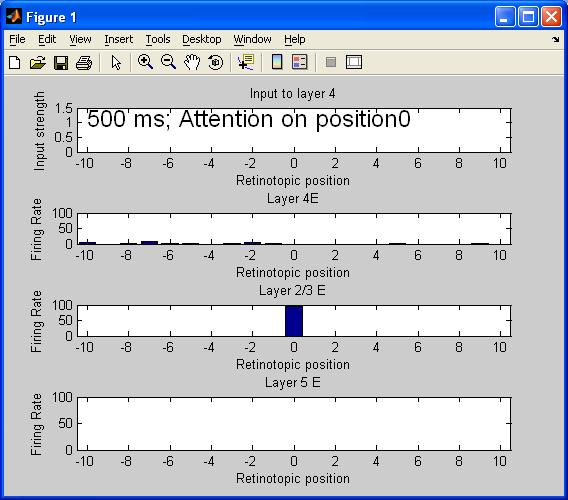
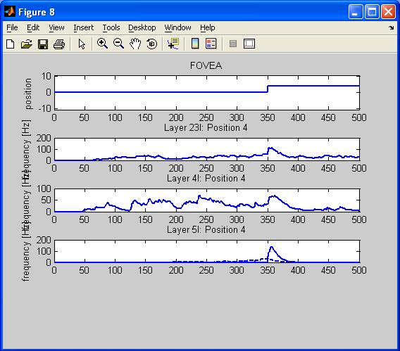

This is the readme for the model associated with the paper Heinzle J, Hepp K, Martin KA (2007) A microcircuit model of the frontal eye fields. J Neurosci 27:9341-53 Usage: To run in matlab unzip the Folder FEF_DEMO.zip and set the matlab path to it. Change settings to the simulation in SetupDemo.m and run the simulation FEF_DEMO.m A figure appears within a minute which is updated to show the state of the simulation:  And then after 4 minutes 7 figures are displayed that show the result of the run:  --- The model is also available from the first author's web site: an excerpt from the paper supplies a web link to the model: "Neurons and synapses. The basic elements of the FEF model, IF neurons, and synapses, were defined similarly to those of Salinas (2003). (In our common effort for transparency and reproducibility of computer simulations, our complete code is available at www.ini.uzh.ch/~jakob/code/FEF_DEMO.zip.)"